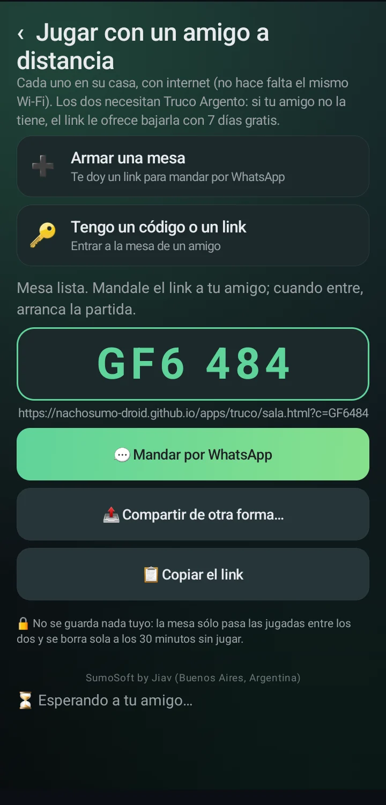
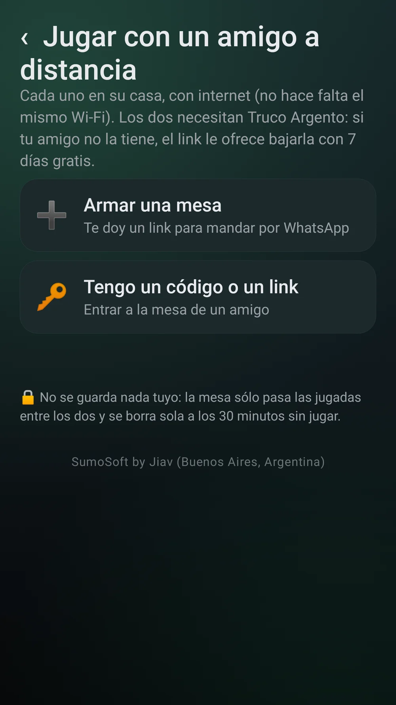
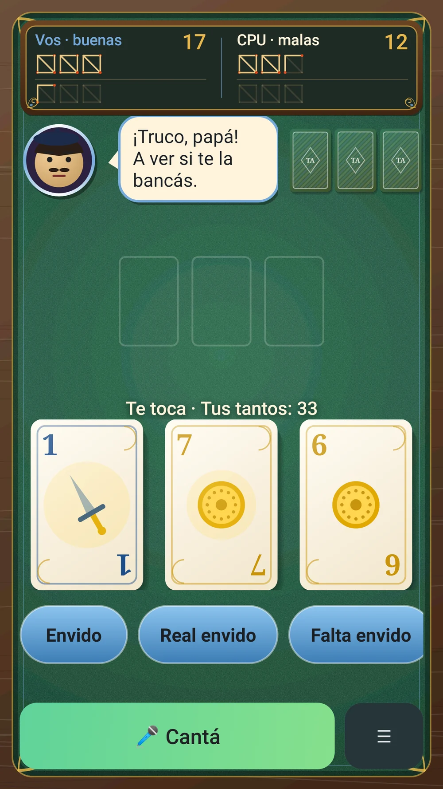
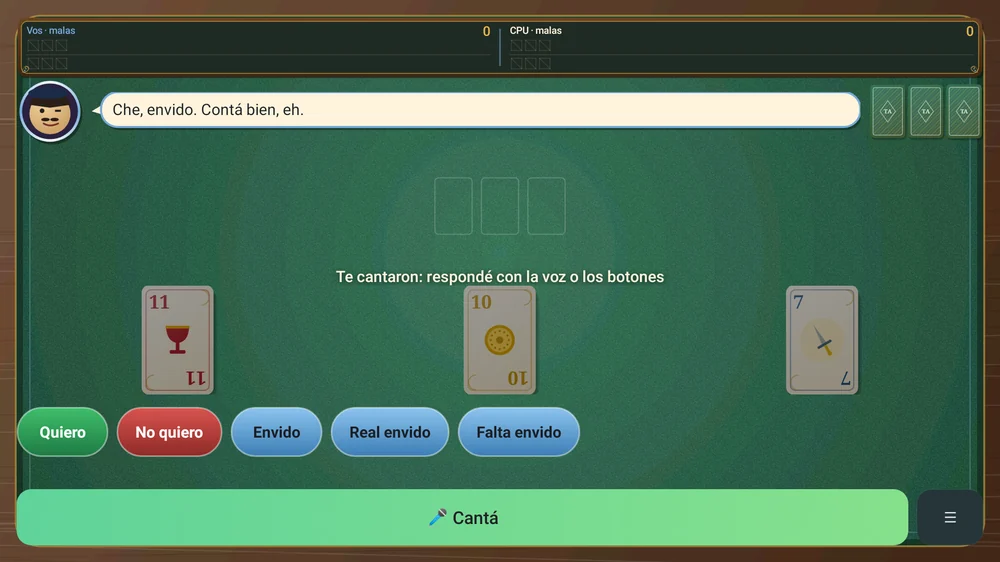
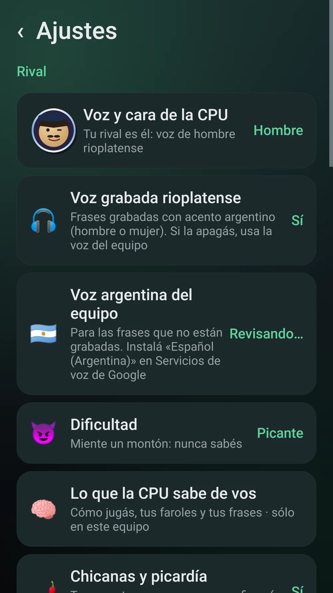

Truco Argento
Un rival que te conoce: truco por voz contra una CPU que aprende cómo jugás, miente y te chicanea. Y ahora, con un amigo a distancia por WhatsApp.
Un rival que te conoce: aprende cómo jugás y te chicanea con eso.
Privacidad: el perfil que arma la CPU («Lo que la CPU sabe de vos») queda sólo en tu equipo, no usa internet y se borra con un botón o al desinstalar; no se graba audio, sólo frases cortas de cantos ya reconocidas. Micrófono: la app pide el permiso de micrófono para entender tus cantos. El reconocimiento lo hace el servicio de voz de tu equipo (normalmente Google); según el equipo puede funcionar sin internet o necesitar conexión. La app no graba ni guarda audio. En TV box sin micrófono en el control se juega con los botones. Bluetooth pide el permiso «Dispositivos cercanos» en Android 12 o más. Dos jugadores en la misma casa no usa servidores: los equipos se hablan directo en tu red. A distancia, las jugadas pasan por un relevo de SumoSoft (Cloudflare) que no guarda datos personales y borra la mesa a los 30 minutos sin jugar. No fue probada todavía en todos los equipos.
💬 Jugá a distancia por WhatsApp
Armás una mesa, te da un link, se lo mandás a tu amigo por WhatsApp y juegan cada uno en su casa, sin estar en el mismo Wi-Fi. Si tu amigo no la tiene, el link le ofrece bajarla con 7 días gratis. La mesa se borra sola a los 30 minutos sin jugar.

Para celulares Android 9 o más nuevos y Android TV / TV box con Android 9 o más.
Pago seguro con Mercado Pago · Sin publicidad · Pago únicoBotón de arrepentimiento
Pago seguro · Podés arrepentirte dentro de los 10 días.
Sin publicidad. Nunca.Pagás una vez y la app es tuya: sin banners, sin videos que te hacen esperar, sin interrupciones. Por qué cobramos
¿Te aparece un aviso al instalar (Play Protect u «orígenes desconocidos»)? Cómo instalar paso a paso — celular y TV.


Mandá el link por WhatsApp y juegan a distancia Contra la CPU, mano a mano o a distancia
Contra la CPU, mano a mano o a distancia

Cantos en letra grande Jugá con un amigo a distancia
Jugá con un amigo a distancia

La mesa: cartas y rival que te carga

Cantá con la voz o usá los botones

Lo que la CPU sabe de vos Voz, dificultad, flor y temas
Voz, dificultad, flor y temas En la TV, con el control
En la TV, con el controlLo que la hace distinta
- 🧠 Te conoce: recuerda tus faroles, tus achiques y tus frases, y te las echa en cara.
- 🔒 Lo que aprende queda en tu equipo: sin internet, y lo borrás cuando quieras.
- 🗣️ Se juega cantando: la app te escucha.
- 😈 La CPU miente al azar: nunca sabés si tiene.
- 🇦🇷 Voz con tonada y muletillas argentinas.
- 🌎 Mano a mano con un amigo a distancia, por WhatsApp; o por Wi-Fi/Bluetooth sin internet.
- 📺 El mismo APK en el celular y en la TV.
- 🔥 Anotador de fósforos de regalo.
- 🚫 Sin publicidad. Nunca.
Qué es
Un rival que te conoce: la CPU aprende cómo jugás (cuándo mentís en el envido o en el truco, si te achicás o siempre subís, si cantás falta cuando venís perdiendo y hasta tus frases de siempre) y te chicanea con eso: «vos siempre cantás falta cuando venís perdiendo», «otra vez con tu frase de siempre». Lo que aprende queda sólo en tu equipo, sin internet, y lo podés ver y borrar en «Lo que la CPU sabe de vos». Es el truco argentino clásico, pero se juega con la voz: cantás «truco», «quiero retruco», «envido», «real envido», «falta envido» o «me voy al mazo» en voz alta, y con el dedo sólo elegís qué carta tirar. La CPU te contesta hablando con tonada argentina (voz de hombre o de mujer, a elección), te carga, te apura y miente: a veces canta truco con basura y a veces se hace el muerto con el ancho, así nunca sabés. Cuatro dificultades, partidas a 15 o a 30 con malas y buenas, flor opcional, mano a mano por Wi-Fi o Bluetooth sin internet, y ahora también con un amigo que está lejos: armás una mesa, le mandás el link por WhatsApp y juegan cada uno en su casa. Con música de guitarra criolla, efectos de sonido y carteles grandes para leer tranquilo cada canto. Y de regalo, un anotador de fósforos para cuando juegan con cartas de verdad.
Qué hace
- Un rival que te conoce: partida a partida, la CPU arma un perfil tuyo (cuánto mentís en el envido y en el truco, cuántas veces no querés o te vas al mazo y cuántas subís, si cantás falta cuando venís perdiendo, y las frases cortas que más usás al cantar). Lo usa para decidir en todos los niveles (más cuanto más difícil) y para chicanearte con eso. En Ajustes → «Lo que la CPU sabe de vos» ves todo y lo borrás con un botón.
- Jugás al truco contra la CPU: cantás en voz alta (truco, retruco, vale cuatro, envido, real envido, falta envido, flor, quiero, no quiero, me voy al mazo) y tocás la carta que querés tirar.
- La CPU habla con voz (hombre o mujer, en Ajustes), usa muletillas y chicanas, y miente al azar según la dificultad: Tranqui, De boliche, Picante o Maestro de esquina.
- Reglas completas: pardas, «el envido está primero», falta envido (en las malas gana el partido), flor y contraflor opcionales, al mazo.
- Dos jugadores en la misma casa: un equipo crea la partida y el otro se une, por Wi-Fi (misma red) o por Bluetooth (equipos vinculados). No usa internet.
- Con un amigo a distancia: «Jugar con un amigo a distancia» → «Armar una mesa» → «Mandar por WhatsApp». Tu amigo toca el link y se sienta en la mesa (si no tiene la app, la baja con 7 días de prueba). Si se corta internet, se reconecta sola.
- Carteles grandes cuando te cantan truco o envido o se muestran los tantos, con pausa (o hasta tocar «Seguir»). Música de guitarra criolla y efectos, con volumen aparte en Ajustes → «Sonido».
- Anotador de fósforos: para partidas con cartas de verdad; se anota tocando o diciendo «dos para nosotros».
Requisitos
- Celular Android 9 o más nuevo, o Android TV / TV box con Android 9 o más
- Micrófono y reconocimiento de voz de Google (si no hay, se juega con los botones)
- Para dos jugadores: mismo Wi-Fi, o Bluetooth con los equipos vinculados; a distancia: internet en los dos equipos
Funciones
- 🌎 Nuevo: jugá con un amigo a distancia, cada uno en su casa: le mandás el link por WhatsApp y listo
- 🧠 CPU más pícara: piensa el envido con probabilidades, canta truco según su mano y el tanteador, y guarda las bravas
- 📣 Cantos y tantos en letra grande, con pausa para leerlos
- 🎸 Música de guitarra criolla y efectos de barajar, cartas y cantos (volumen aparte)
- 🧠 Un rival que te conoce: aprende cómo jugás y te chicanea con eso (todo queda en tu equipo)
- 🇦🇷 Nueva mesa de bar: paño verde, madera, filete porteño, cartas animadas y un rival con cara que te habla en globitos
- 🗣️ Ahora habla con acento argentino de verdad: frases grabadas rioplatenses, de hombre o de mujer
- 👩 Elegí tu rival: él, de boina y bigote, o ella, de rodete y pañuelo celeste (va con la voz que elijas)
- 😏 El rival pone caras: se agranda cuando gana, se enoja cuando pierde, se pone nervioso con tu truco y se burla si te agarra mintiendo
- 🇦🇷 Intro bien argentina: dos hinchas de dibujito, bandera, tres estrellas, asado, mate y papelitos
- Se juega con la voz: cantás y la app entiende (con botones de respaldo)
- Rival con voz argentina, de hombre o de mujer
- La CPU miente: faroles al azar, nunca sabés si tiene
- Reglas completas: truco, retruco, vale cuatro, envido, real envido, falta envido, flor opcional, mazo
- A 15 o a 30 con malas y buenas, tanteador con fósforos
- Dos jugadores por Wi-Fi o Bluetooth, sin internet, o a distancia por internet
- En la TV con el control remoto
- Anotador de fósforos por voz para partidas de verdad
Cómo se instala
- Descargá el APK e instalalo (si Android pregunta, permití instalar desde el navegador). Es el mismo APK para el celular y la TV.
- Abrila, mirá la guía y permití el micrófono (sólo se usa mientras jugás; no se graba nada).
- En Ajustes elegí la voz del rival (hombre o mujer) y la dificultad. Para comprar: «Activar» → «Comprar con Mercado Pago».
Novedades
- 1.4.0 — Jugá con un amigo a distancia: armás una mesa, le mandás el link por WhatsApp y juegan cada uno en su casa (se reconecta sola si se corta). CPU más pícara (envido por probabilidades, truco según su mano y el tanteador, faroles medidos, guarda las bravas, pardas y falta al final). Cantos y tantos en carteles grandes con pausa. Música de guitarra criolla y efectos de sonido, con volumen aparte. Guía con las novedades.
- 1.3.4 — Ícono nuevo: bandera argentina al lado de las cartas (mismo diseño, mismo personaje de bigote en el juego).
- 1.3.3 — Prueba de 7 días a prueba de reloj mal puesto: si el equipo arranca con la fecha atrasada (TV box sin pila), la tarjeta de prueba ahora se muestra siempre con los días que quedan y el tiempo se cuenta con el reloj interno del equipo; atrasar la hora ya no regala ni esconde días. Botón «Comprar con Mercado Pago» siempre habilitado (en algunos equipos se veía gris).
- 1.3.2 — Manos libres arreglado en Samsung (A03 / Android 13) y TV box MX10: escucha sola cuando te toca, reintenta si el reconocedor se traba y usa internet si falta la voz sin conexión. Indicador del micrófono en la mesa (escuchando, procesando o error con el motivo) y nueva opción «Probar micrófono» en Ajustes.
- 1.3.1 — Con voz de mujer, la rival es ella: un personaje nuevo con rodete, florcita, aros y pañuelo celeste, con los mismos 12 gestos animados. En Ajustes se ve la cara de tu rival y la guía muestra a los dos.
- 1.3.0 — Acento argentino de verdad: 189 frases grabadas con voz rioplatense (hombre y mujer), y las frases que cambian se arman con pedazos grabados. Nueva opción «Voz argentina del equipo» que detecta e instala la voz es-AR. El rival pone caras animadas según la jugada (canchero, enojado, triste, pícaro, nervioso, burlón, festejo y derrota). En la intro, dos hinchas de dibujito que saltan, besan la copa y festejan.
- 1.2.0 — Intro nueva bien argentina (bandera flameando, tres estrellas, asado, mate y papelitos; se saltea y se vuelve a ver desde Ajustes). Mesa nueva: paño verde con textura y borde de madera, filete porteño, cartas más lindas con sombras, animaciones al repartir y tirar, rival con cara y globitos, tanteador de pizarrón y botones de canto que brillan.
- 1.1.0 — Un rival que te conoce: la CPU aprende cómo jugás (faroles, achiques, subidas, falta cuando venís perdiendo y tus frases) y te chicanea con eso. Nueva pantalla «Lo que la CPU sabe de vos» con botón para borrar. Todo queda en tu equipo.
- 1.0.0 — Primera versión.